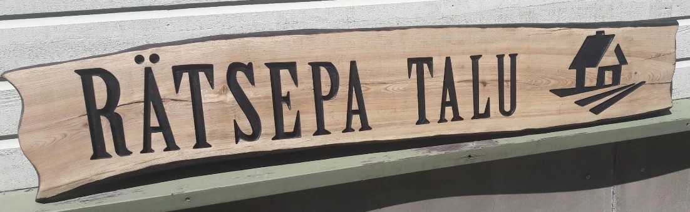
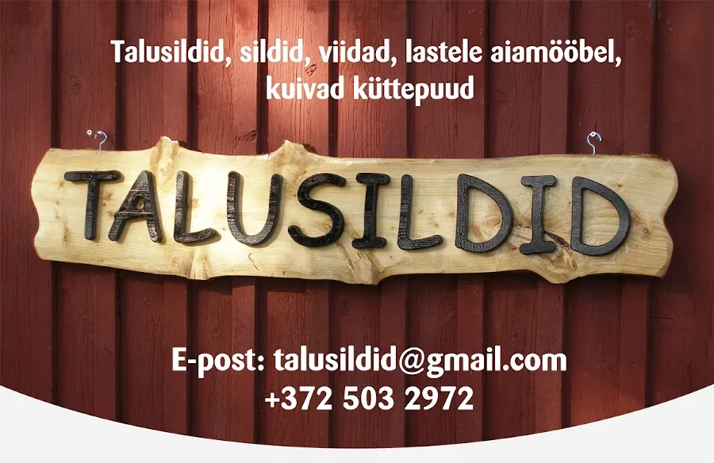

Käsitööna valmistatud puidust talusildid
Eestis on ilus traditsioon paigutada oma talu või suvekodu väravasse kohanimele vastav talusilt või viit. Valmistan erineva tehnoloogiaga puidust silte.

Siltide valmistamise stiilid
-

Põdrakünka
90 €Tähed freesitud u. 10 mm sügavuselt ja töödeldud musta emailvärviga.
-

Uuepere talu
100 €Tähed paksusega 18 mm eraldi välja freesitud, töödeldud musta emailvärviga ja kinnitatud tihvtnaeltega plangule.
-

Padussoo talu
110 €Tähed paksusega 18 mm eraldi välja freesitud, töödeldud musta emailvärviga ja kinnitatud tihvtnaeltega 30 mm paksusele tammeplangule.
-

Liiduvere
95 €Tähed freesitud u. 10 mm sügavuselt ja töödeldud musta emailvärviga, plank põletatud gaasilambiga.
-

Rätsepa talu
110 €Tähed freesitud u. 10 mm sügavuselt ja töödeldud musta emailvärviga. Valmistatud 30 mm saareplangu peale.
Viimistlus
Kõik sildid on töödeldud kahekordselt ilmastikukindla värvitu lakiga („REMMERS LASUR“). Aastas korra soovitatav hooldada (müüakse ESPAKIS).
„REMMERS LASUR“-i asemel võimalik kasutada valmistamisel ka heledat tõrvaõli (tõmbub aja möödudes halliks).
Eritellimused
Võimalik tellida kliendi enda väljavalitud kirjastiilis / fontiga silte.
Eritööde puhul hind kokkuleppel.
Mõõdud ja materjal
- Tähe kõrgus
- 140 mm
- Laua laius
- u. 200-250 mm
- Materjal
- Servamata tamme- või kuuseplank laiusega u. 200-300 mm
Valikus erineva suurusega trüki- ja kirjatähed ning numbrid kas peitsitult või värvitult. Tähtede näidised.
Tähtede suuruse muutmisest tulenevalt võimalik muuta kogu sildi mõõtu vastavalt kliendi soovile.
Võimalikud eritellimused, erinevad kirjastiilid (n. „Dannebrog“, „NEPTUN“) jne.
Tootmine Läänemaal. Transport pakiautomaati, cargobussiga või cargokulleriga üle Eesti!
Lisaks siltidele

Mööbel
Lisaks valmistan ka söögi- ja diivanilaudu ning lastele aiamööblit. Kokkuleppel võimalikud ka muud puidust eritellimustööd.
Vaata mööblit
Küttepuud
Müügil kuivad küttepuud, sanglepp ja hall lepp, 40L võrgus (30 cm), lahtiselt 40 cm, 50 cm. Küttepuude transport Läänemaa, Harjumaa, Raplamaa ning Pärnumaa piires.
Vaata küttepuid